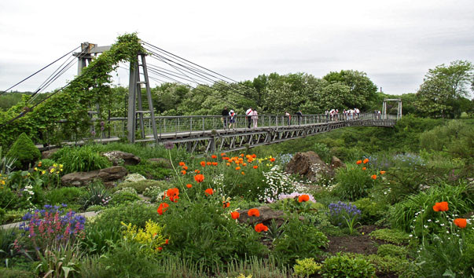

Ботанічний сад в Кривому Розі
-

Криворізький ботанічний сад має надзвичайну колекцію рідкісних рослин, серед яких близько 200 видів лікарських і майже тисяча квітково-декоративних зразків. Тут більше 600 видів деревних і чагарникових видів рослин, серед яких можна знайти 120 різних сортів.
-
У червні починається цвітіння сортів ірису гібридного, за ірисами зацвітають численні сорти півоній, а потім лілейники (Hemerocallis). В кінці червня зацвітають клематиси.
-

Липень характеризується великою кількістю квітучих багаторічних (дельфиниуми, люпин, ромашки) і однорічних рослин (портулак, ешшольція і ін.). Цвітуть лілії і японські іриси. Зацвітає рододендрон мілкоцвітна.
-
У серпні зацвітає лілія прекрасна з ароматом ванілі. З квітучих рослин варто подивитися клематиси, троянди, астильби.